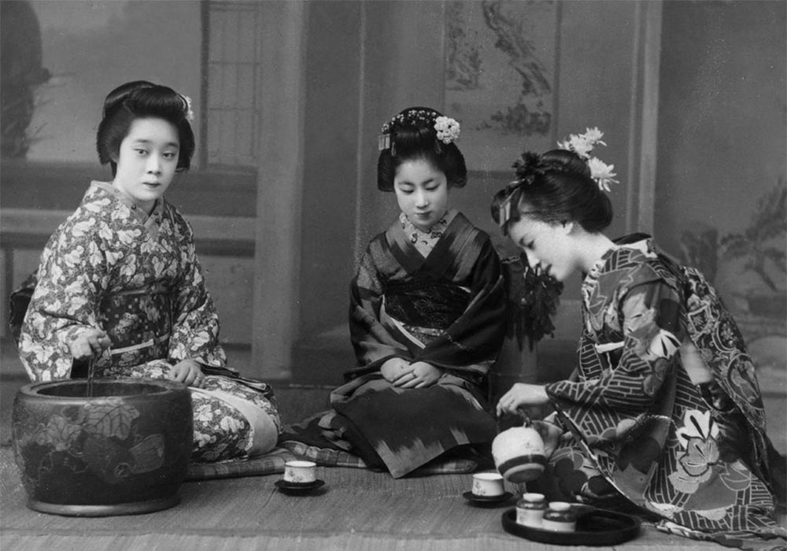

Sadou

Upacara minum teh atau Sadou ini terdapat dua jenis, yakni Ochakai dan Chaji. Ochakai adalah upacara minum teh yang terbilang tidak terlalu formal karena biasanya orang Jepang akan mengundang teman dan kerabatnya untuk melakukan kegiatan ochakai sebagai bentuk perayaan keberhasilan atau semacamnya. Kemudian, Chaji juga merupakan upacara minum teh yang sifatnya formal dan sangat sakral, bahkan pelaksanaannya dapat berlangsung lebih dari 4 jam.
Awalnya, upacara minum teh bermula dari agama Buddha (Zen) yang dibawa orang Tiongkok di abad ke-6. Kemudian, upacara ini kerap dilakukan oleh orang Jepang sampai abad ke-12 yang mana pada abad itu ditemukan varian teh baru Matcha, yaitu teh dari serbuk teh hijau.
Sampai akhirnya pada abad ke-16, upacara minum teh terus menyebar ke seluruh masyarakat Jepang dan menjadi suatu budaya yang ada di Jepang hingga saat ini. Bahkan dengan rasa bangganya, orang-orang Jepang selalu mencoba melestarikan budaya yang satu ini hingga ke ranah Internasional.
Sadou atau upacara minum teh ini memiliki tata cara dalam pelaksanaannya. Tuan rumah harus melakukan persiapan, seperti menata ruangan, mendekor, menyiapkan peralatan Sadou-nya, dan semacamnya. Selain itu, para tamu juga memiliki tata caranya sendiri sebelum diperkenankan memasuki ruangan yang telah disediakan oleh tuan rumah. Kemudian, ada pula aturan duduk dan tata cara menerima dan menyerahkan mangkuk tehnya.
Di balik itu semua, Sadou atau upacara minum teh yang sudah menjadi kebudayaan Jepang ini memiliki banyak makna kehidupan, misalnya, sikap saling menghargai dan menghormati antara tuan rumah dan tamu. Dengan begitu, budaya Jepang yang satu ini secara tak langsung menunjukkan karakter dari si tuan rumah yang bertujuan agar terwujudnya ketenteraman satu sama lain.